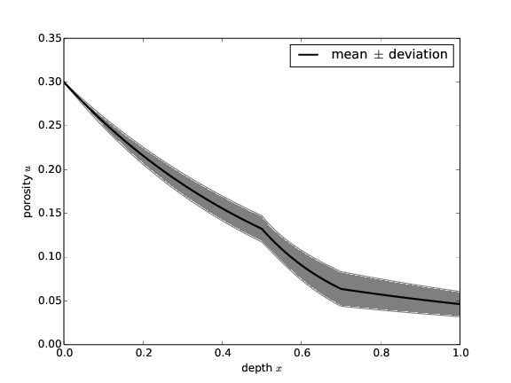

A Glimpse of Chaospy in Action
To demonstrate how Chaospy is used to solve an uncertainty quantification problem, we consider a simple physical example of (scaled) exponential decay with an uncertain, piecewise constant coefficient: $$ \begin{equation} u'(x) = -c(x)u(x),\quad u(0)=u_0,\ c(x) = \left\lbrace \begin{array}{ll} c_0, & x < 0.5\\ c_1, & 0.5\leq x < 0.7\\ c_2, & x\geq 0.7 \end{array} \right. \end{equation} $$ Such a model arises in many contexts, but we may here think of \( u(x) \) as the porosity at depth \( x \) in geological layers and \( c_i \) as a (scaled) compaction constant in layer number \( i \). For simplicity, we consider only three layers with three uncertain constants \( c_0 \), \( c_1 \), and \( c_2 \).
The model can easily be evaluated by solving the differential equation
problem, here by a 2nd-order Runge-Kutta method on a mesh x,
coded in Python as:
def model(x, u0, c0, c1, c2):
def c(x):
if x < 0.5: return c0
elif 0.5 <= x < 0.7: return c1
else: return c2
N = len(x)
u = np.zeros(N)
u[0] = u0
for n in xrange(N-1):
dx = x[n+1] - x[n]
K1 = -dx*u[n]*c(x[n])
K2 = -dx*u[n] + K1/2*c(x[n]+dx/2)
u[n+1] = u[n] + K1 + K2
return u
Alternatively, the model can be implemented in some external software in
another programming language. This software can either be run as a
stand-alone application, where the Python function model
runs the application and communicates with it through input and output
files, or the model function can communicate with the external software
through function calls if a Python wrapper has been made for the software
(there are numerous technologies available for creating Python wrappers for
C, C++, and Fortran software).
The Chaospy package may be loaded by
import chaospy as cp
Each of the uncertain parameters must be assigned a probability density, and we assume that \( c_0 \), \( c_1 \), and \( c_2 \) are stochastically independent:
c0 = cp.Normal(0.5, 0.15)
c1 = cp.Uniform(0.5, 2.5)
c2 = cp.Uniform(0.03, 0.07)
# Joint probability distribution
distribution = cp.J(c0, c1, c2)
The sample points \( (c_0,c_1,c_2) \) in probability space, where the model is to be evaluated, can be chosen in many ways. Here we specify a third-order Gaussian Quadrature scheme tailored to the joint distribution:
nodes, weights = cp.generate_quadrature(
order=3, domain=distribution, rule="Gaussian")
The next step is to evaluate the computational model
at these sample points (object nodes):
x = np.linspace(0, 1, 101)
samples = [model(x, u0, node[0], node[1], node[2])
for node in nodes.T]
Now, samples contains a list of arrays, each array containing
\( u \) values at the 101
x values for one combination \( (c_0,c_1,c_2) \) of the input parameters.
To create a polynomial chaos expansion, we must generate orthogonal polynomials
corresponding to the joint distribution. We choose polynomials
of the same order as specified in the quadrature rule, computed by the
widely used three-term recurrence relation (ttr):
polynomials = cp.orth_ttr(order=3, dist=distribution)
To create an approximate solver (or surrogate model), we join the polynomial chaos expansion, the quadrature nodes and weights, and the model samples:
model_approx = cp.fit_quadrature(
polynomials, nodes, weights, samples)
The model_approx object can now cheaply evaluate the model
at a point \( (c_0,c_1,c_2) \) in probability space for all \( x \) points
in the x array.
Built-in tools can be used to
derive statistical information about the model response:
mean = cp.E(model_approx, distribution)
deviation = cp.Std(model_approx, distribution)
The mean and deviation objects are arrays containing the
mean value and standard deviation at each point in x.
A graphical illustration is shown
in Figure 1.
The accuracy of the estimation is comparable to what Dakota and Turns can provide. Figure 2 shows that the estimation error in the three software toolboxes are almost indistinguishable. The error is calculated as the absolute difference between the true value and the estimated value integrated over the depth \( x \): $$ \begin{align*} \varepsilon_{\mathbb E} &= \int_0^1 | \mathbb E(u)-\mathbb E(u_{\mbox{approx}}) | \ud x & \varepsilon_{\mathbb V} &= \int_0^1 | \mathbb V(u)-\mathbb V(u_{\mbox{approx}}) | \ud x \end{align*} $$
Both the point collocation method and the pseudo-spectral projection method are included. The former is calculated using two times the random collocation nodes as the number of polynomials, and the latter using Gaussian quadrature integration with quadrature order equal to polynomial order. Note that Turns does not support pseudo-spectral projection, and is therefore only compared using point collocation.
Figure 1: Solution of a simple stochastic differential equation with uncertain coefficients.

Figure 2: The error in estimates of the mean and variance, computed by Dakota, Turns, and Chaospy using point collocation and pseudo-spectral projection, is almost identical.